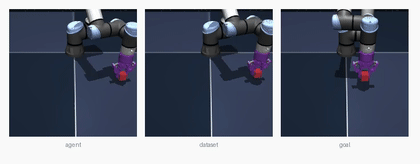
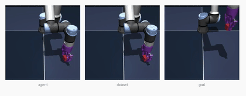
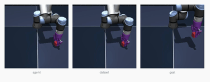
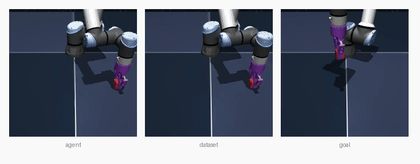

Reproducing the official LeWM Cube planning benchmark on Apple Silicon — the first MuJoCo world on Mac · June 4, 2026 · companions: PushT · Two-Room
Bottom line. The first MuJoCo-based LeWM world reproduced on Apple Silicon.
Running the genuine le-wm/eval.py dataset-replay protocol (50 episodes, seed 42, official CEM) on
quentinll/lewm-cube scored 66.0% (33/50) — vs the paper's ~74 and a
reporter's 74. The gap (−8) is larger than the 2D worlds and has a clean cause: macOS has no EGL,
so eval frames are rendered with a different MuJoCo backend (glfw) than the dataset, and a
pixels-only model on a visually-rich 3D scene is sensitive to that shift.
OGBench-Cube is a 3D manipulation task: a robot arm must move a cube to a target position/orientation. Success uses the env's own goal criterion, over 50 dataset-sampled start/goal pairs at eval seed 42.
| Run | Env / device | Success | Eval wall-clock | Status |
|---|---|---|---|---|
| Paper (LeWM) | authors, CUDA + egl | ~74 | — | reference |
| Reporter (YushenZuo, #62) | released ckpt, CUDA | 74 | — | independent |
| Ours | MPS + glfw render | 66.0 (33/50) | 222 s | reproduced (render gap) |
17 failures: episodes 0, 1, 6, 7, 9, 11, 14, 17, 22, 24, 26, 27, 29, 31, 34, 38, 41.
Actual rollouts written by eval.py (lewm_data/cube/env_*.mp4, re-encoded to GIF).
Each panel triplet shows current observation · replay · goal; the robot arm manipulates the cube
toward the red target.




Cube (and Reacher) render through MuJoCo's OpenGL backend, and eval.py hardcodes the
Linux-only egl backend. On Apple Silicon that fails immediately:
os.environ["MUJOCO_GL"] = "egl" # upstream default → ImportError: Unable to load EGL library dlopen(EGL): 'EGL' (no such file), '/usr/lib/EGL' (no such file, not in dyld cache)
macOS only supports the glfw backend (via the OS's canonical OpenGL). The fix is a one-liner —
make the backend platform-aware:
os.environ.setdefault("MUJOCO_GL", "glfw" if sys.platform == "darwin" else "egl")
| Backend | macOS Cube render | Notes |
|---|---|---|
egl (hardcoded) | ImportError | EGL/OSMesa are Linux-only |
glfw (the fix) | renders (224×224×3) | 50 parallel envs verified — no fork-safety issue |
Confirmed 50-env parallel rendering works: swm.World(num_envs=50) reset →
pixels (50,1,224,224,3). This is a clean upstream-PR candidate (it'd fix Cube/Reacher for every Mac user).
In other words: the pipeline reproduces faithfully; the residual gap is a measurable, well-localized cost of the macOS rendering workaround — not a model issue.
| Smoke (1 plan, 2 envs) | 1.7–4.0 s |
| Batched (50 envs) | ~31–84 s |
| CEM config | 300 × 30, H=5 |
| Total wall-clock | 222 s |
| Render backend | glfw (CGL) |
| Device | Apple MPS |
# env from prior runs: transformers==4.57.6, hdf5plugin, patched le-wm/eval.py
# eval.py now sets MUJOCO_GL=glfw automatically on macOS (sys.platform == "darwin")
# dataset: cube_single_expert.tar.zst (46 GB) -> .h5 (95 GB, 10,000 eps, 2.01M frames)
# from quentinll/lewm-cube · symlinked at $STABLEWM_HOME/ogbench/cube_single_expert.h5
# checkpoint: quentinll/lewm-cube weights.pt + config.json
cd le-wm
STABLEWM_HOME=.../lewm_data SWM_DEVICE=mps PYTHONPATH=. \
python eval.py --config-name=cube policy=cube/lewm \
solver.device=mps +cache_dir=null eval.num_eval=50
# → {'success_rate': 66.0, ...} in ~222 s
| Artifact | What it is |
|---|---|
cube-baseline.html | This report |
cube_report_assets/ep_*.gif | 4 reproduced episodes (3 success + 1 failure) |
lewm_data/cube/env_0..49.mp4 | All 50 reproduced episode videos |
lewm_data/cube/ogb_cube_results.txt | Official metrics + evaluation_time |
le-wm/eval_cube.log | Run log (66%) |
le-wm/eval.py (patched) | Platform-aware MUJOCO_GL (glfw on darwin) |
lewm_data/ogbench/cube_single_expert.h5 | Symlink → 95 GB dataset on external scratch |
lewm_data/checkpoints/cube/lewm/ | weights.pt+config.json symlinks |
| World | Sim | Paper | Ours (MPS) | Status |
|---|---|---|---|---|
| PushT | pymunk | 96.0 ± 2.83 | 90.0 | reproduced |
| Two-Room | pygame | ~87 | 86.0 | reproduced |
| OGBench-Cube | ogbench / MuJoCo | ~74 | 66.0 | reproduced (render gap) |
| Reacher | dm_control / MuJoCo | ~86 | — | gated: dm_control↔mujoco skew |
Cube was the rendering-only MuJoCo world (now solved). Reacher additionally needs a
dm_control/mujoco version alignment (the flex_bandwidth error) before it can run.